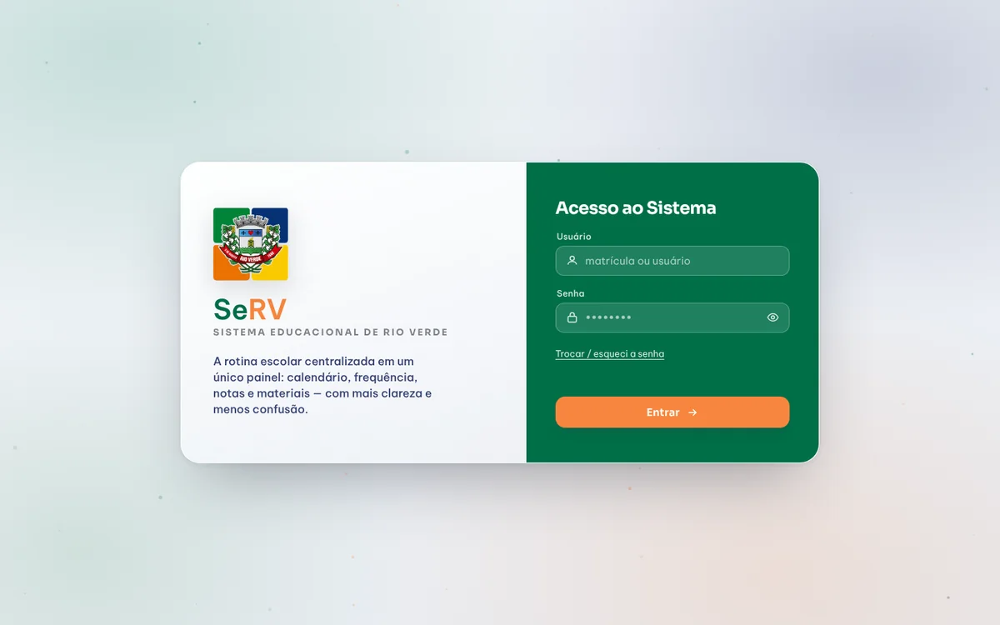
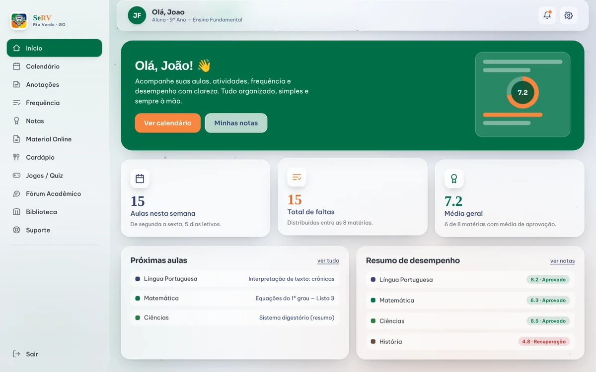
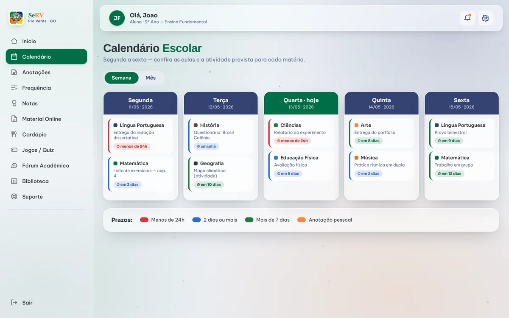
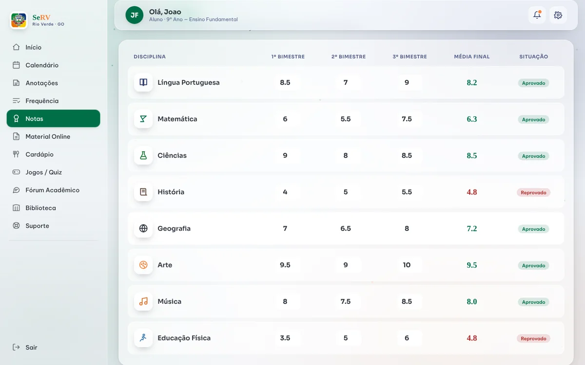
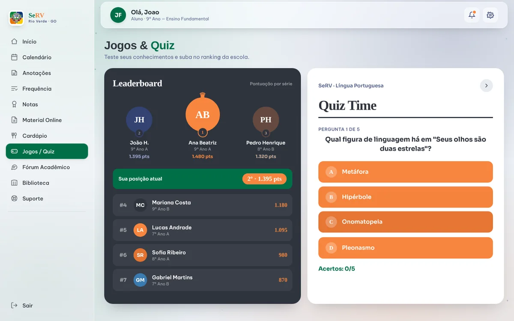
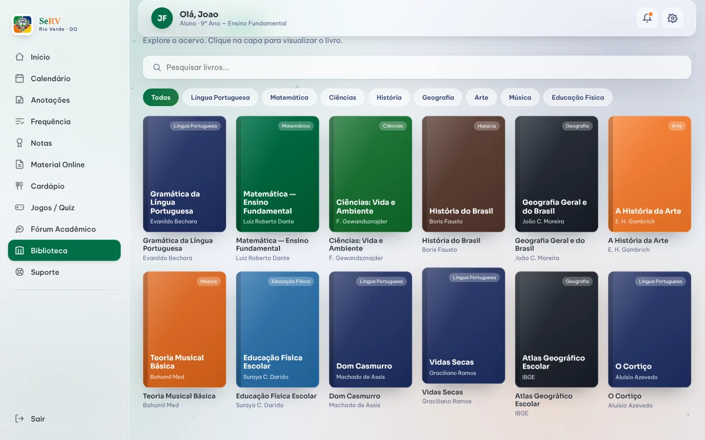
1st Place Project
SeRV
School management dashboard for Rio Verde's municipal schools. Won 1st place at UniRV's "Do Código ao Mercado" competition. Read the news →
Software Engineer
Graphic Designer
 Git
Git GitHub
GitHub Java
Java C
C PostgreSQL
PostgreSQL R
R HTML & CSS
HTML & CSS Python
Python Spring Boot
Spring Boot JavaScript
JavaScript Node.js
Node.js





School management dashboard for Rio Verde's municipal schools. Won 1st place at UniRV's "Do Código ao Mercado" competition. Read the news →
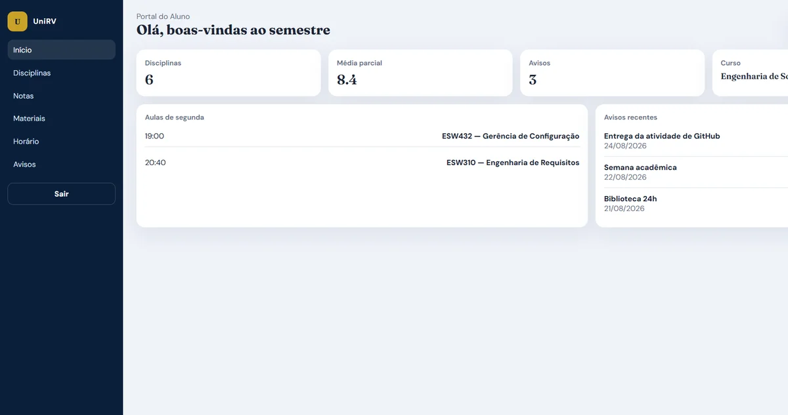
Academic system built by a 13-person team for the Software Configuration Management course, practicing branches, code review, tagged releases, CI and configuration item control on GitHub.
Bakery management system with a REST API: products, ingredients, categories, recipes and technical sheets, plus a simple web interface.
Interactive 2D shape editor that applies GoF design patterns (State, Prototype, Command/Memento, Composite) on an MVC architecture.
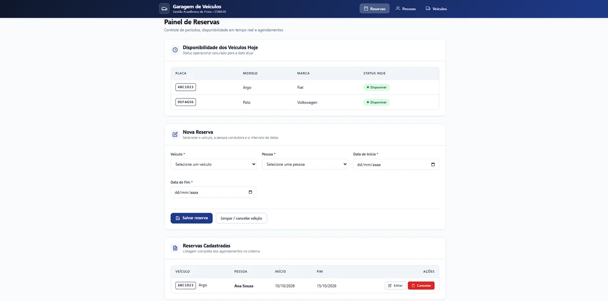
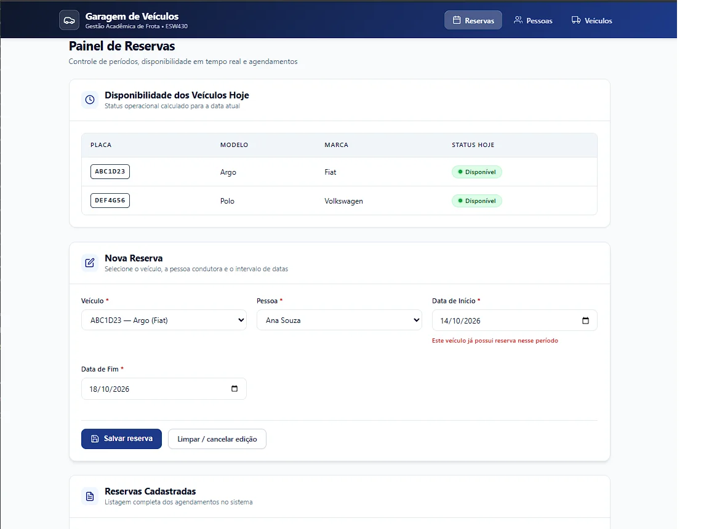
Booking system for people and vehicles with availability checks, date-conflict validation and JSON persistence, built around SOLID principles.
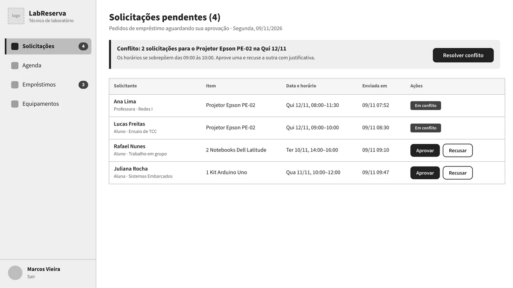
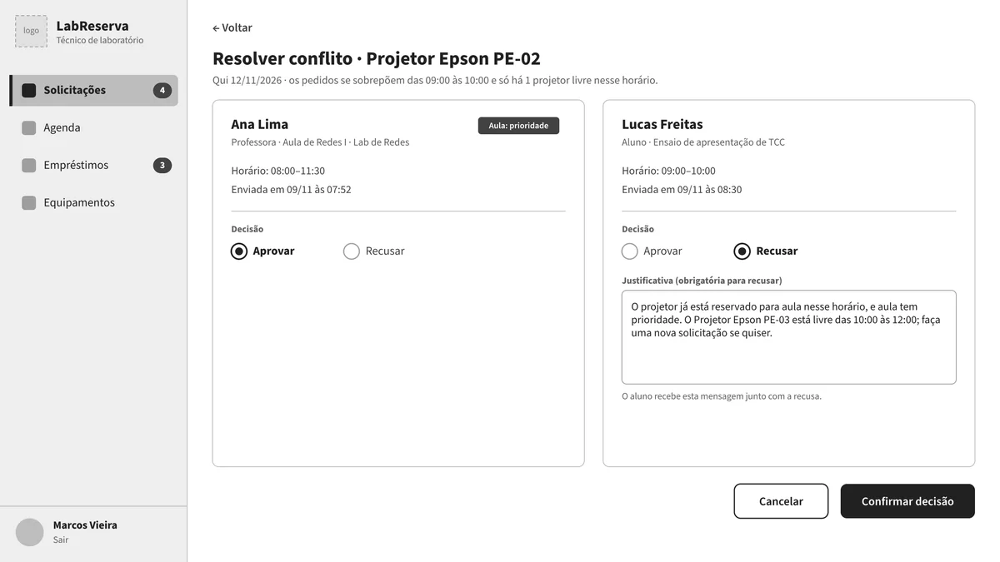
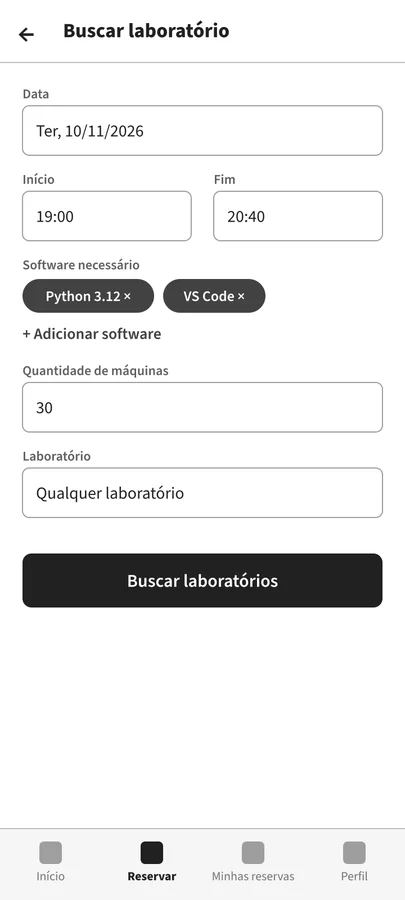
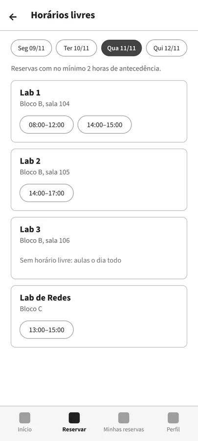
Clickable mid-fidelity prototype of a lab booking and equipment loan system, with flows for professors, students and technicians.
I'm currently looking to join a cross-functional team that values improving people's lives
through accessible design, or have a project in mind? Let's connect.